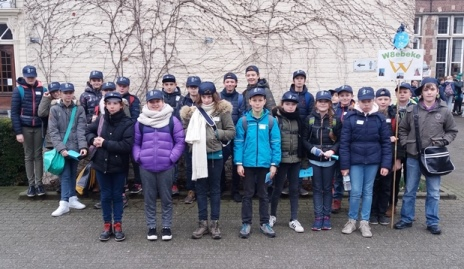
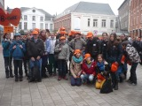
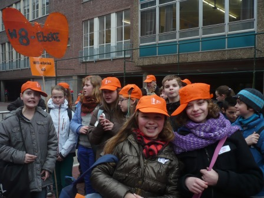
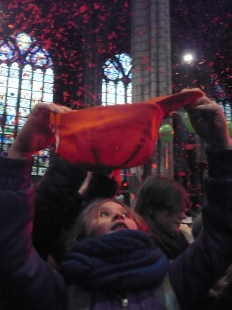
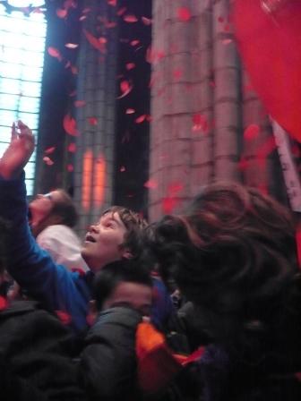
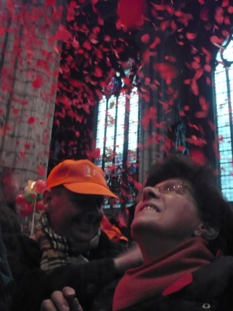
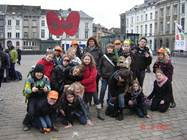
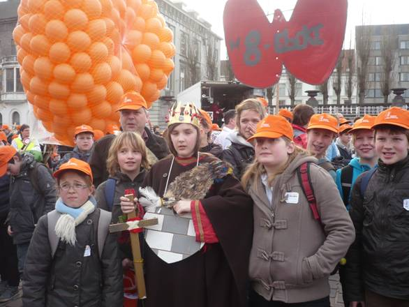

.: BAVODAG :.
Hieronder vind je impressies van de vroegere vormelingendag.
In 2026 organiseren we een BAVO-dag in onze eigen Bavoparochie.
Lees meer.
BAVO staat voor “Bangelijke Vormelingendag”, want 3000 vormelingen in één stad, dàt is pas bangelijk. De vormelingen worden zo onderdompelen in een hartverwarmende en jonge kerkervaring.
Ook met de vormelingen van 2018 waren we erbij!
Dit zijn hun impressies.

Op zaterdag 17 februari gingen we voor de ”zoveelste” keer naar Gent voor de BAngelijke VOrmelingen DAG. Het is en blijft een dag om nooit te vergeten: zo’n groep vormelingen op zich maakt al een ongelooflijke indruk. Hierbij ervaren we alleszins dat we met ons groepje uit Wachtebeke niet alleen zijn die zich voorbereiden op het Vormsel. Maar dat er in Oost-Vlaanderen alleen al méér dan 3000 meisjes en jongens zijn, en dan zijn ze nog bijlange niet allemaal naar de Vormelingendag in Gent gekomen. Het is dus echt een massa, maar dank zij de puike organisatie loopt alles op wieltjes. Toch zijn het vooral de toffe activiteiten die een goed gevoel geven: sfeervolle stille momenten, afgewisseld met zang, filmpjes, boeiende gesprekken en leuke spelletjes. In het catechesemomentje zagen we dat Zacheus’ ontmoeting met Jezus verandering en vreugde in zijn leven bracht. En elk jaar is de apotheose een 'WaaW-moment', nu met heel de groep op het Sint-Baafsplein. Het was ridder Allowin die op zijn paard kwam aangereden en vertelde hoe hij Bavo werd. Ook hier weer betekende de ontmoeting met Jezus, verandering en vreugde…
Zelfs heel wat toeristen vroegen zich af wat er gebeurde en ook zij genoten van het fijne spektakel.
Maar vooral waren het de zovele vormelingen die zegden dat het een fantastische dag was!
De begeleidende catechisten konden het alleen maar beamen!
Catechisten Rony, Chris, Carla en Bart
Bavodag 2017

Uitslapen was er niet bij vorige zaterdag: 23 frisse vormelingen en 3 enthousiaste catechisten waren klaar om aan de BAn gelijke Vormingsdag te beginnen.
En dat was een dag om nooit te vergeten: meer dan 3000 Oost-V laamse vormelingen, ongeveer 200 medewerkers en catechisten, dat maakte wel in druk! Maar het waren vooral de toffe activiteiten die ons een goed gevoel gaven .
We begonnen met een catechesemoment met als thema “ Zach ëus ” . Hierbij zag en we dat de ontmoeting met Jezus vreugde b rengt en je leven verandert. Dat was trouwens ook zo voor Bavo. En wat betekent dat voor ons? Enkele jongens en meisjes hadden daarbij heel doordachte en diepgaande antwoorden. Fijne jeugd!
Daarna was er een zangstonde met toffe liederen in de Groenzaal van Sint-Bavo. Honderde n jonge kelen, dat is niet niets !
Na de lunch vertrokken we naar het Sint-Lievenscollege : bij het gebedsmoment in de kapel en de getuigenis van enkele Jokri- jongeren was het héé l stil. Maar de spelletjes waren voor de meeste vormelingen misschien wel het leukste.
Het slotmoment op het Emile Braunplein met alle v ormelingen én bisschop Van Looy was (zoals altijd) indrukw ekkend. En als grote verrassing gingen duizende n , nee, miljoen en zeepbelletjes in de lucht. Een WOW -moment ! Met een streepje zon erbij was het waarschijnlijk n óg schitterender geweest .
En dan trokken meer dan 3000 blauwe, groene, rode en oranje petjes naar huis.
Gent zal het geweten hebben
Catechisten Chris, Rony en Ann
BAVO-dag 2016


Meer dan 3000 vormelingen, 450 catechisten en 175 vrijwilligers waren erbij. Ook vormelingen van bij ‘ons’, meer bepaald uit Overslag, Wachtebeke, Zaffelare en Lochristi, waren van de partij en keerden, zoals elk jaar, met vurig enthousiasme terug naar huis!
Deze tiende editie van de BAVO-dag was voor het eerst ook een 'natte' editie, want de regen speelde een beetje spelbreker. Maar dat kon het humeur van deze 19 vormelingen uit Wachtebeke en Overslag niet bederven. Bij aankomst in de Sint-Bavo Humaniora werden we verwelkomd door de Bisschop van Gent, Luc Van Looy. De voormiddag werd gevuld met liedjes zingen en een catechesmomentje over Zacheüs. Elke vormeling mocht een vraag stellen aan Jezus. Daaruit werden er twee gekozen om door te sturen naar een speciaal gsm- nummer. Die sms-berichtjes zouden later op de dag, bij het slotmoment, op groot scherm verschijnen !
Na de middag werden we verwacht in Sint-Lievenscollege voor de spelletjesnamiddag. De begeleiders genoten ondertussen van een lekkere kop koffie, geserveerd door onze Wachtebeekse catechiste Sabine, die al 10 jaar lang als vrijwilliger meewerkt aan de BAVO-dag.
Na de spelletjes hoorden we een kort getuigenis over de Arkgemeenschap uit Drongen. Daarna werden we uitgenodigd in de kapel voor gebed en zang. Opnieuw zagen we een Wachtebeekse bekende. Miriam, fluitiste in het catecheseorkest, begeleidde de zang !
Tegen 16u vertrokken we met z’n allen naar het Sint-Baafsplein voor het slotmoment. Op een groot scherm verschenen daar beelden van vormelingen uit verschillende streken. Ook de vragen die de vormelingen stelden aan Jezus, verschenen op dit scherm. Een spectaculair optreden van enkele acrobaten, en een slotwoord van onze bisschop rondden alles af.
“Tot op het vormsel”, zei Mgr. Van Looy nog. Waarop één van onze vormelingen terecht opmerkte: “Voor ons geldt dat letterlijk, want hij komt zelf naar Wachtebeke om ons te vormen.”
Jammer van het natte en koude weer, maar we hebben toch een mooie dag gehad !
Dank aan onze trouwe begeleiders: Chris Temmerman, die er voor de 10e keer bij was, en Rony Van Hecke, voor wie het de vijfde keer was.
Veroniek Van Bambost (aangevuld door Petra Mussche en Judit De Smet)
BAVO-dag 2015


Zaterdag, 21 februari 2015 trokken 22 vormelingen uit Sint-Kruis-Winkel, Overslag en Wachtebeke richting Gent.
Samen met ongeveer 3500 toekomstige vormelingen uit het bisdom Gent, beleefden ze een onvergetelijke dag.
Onze vaste hoofdbegeleidster Chris Temmerman had last van grieperige toestanden en de daarbij horende hoge koorts en moest dit jaar passen. Gelukkig konden we rekenen op zes andere begeleiders (Annemie; Myriam; Rony; Bart; Carla; Jacqueline) om alles in goede banen te leiden. Samen met de puike organisatie van Gent uit verliep alles opperbest.
Er was ruimte voor spel, een sfeervol bezinningsmoment, zang, een beklijvende getuigenis van twee jongeren met o.a. de indrukken van hun ontmoeting met paus Franciscus, een catechesemoment rond “Jezus’ ontmoeting met Zacheüs” gevolgd door het slotmoment op het plein voor de Sint-Baafskathedraal en dit met alle meer dan 3500 aanwezigen. We weten nu ook heel wat meer over Bavo, patroon van het bisdom.
De ontmoeting met onze bisschop Luc was voor velen een beklijvend moment.
Het deed deugd te ervaren dat Jezus’ boodschap, ook in 2015, het hart van heel wat jonge mensen beroert. Met hun jeugdig enthousiasme zijn ze klaar om via hun keuze de wereld rondom hen beter en mooier te maken en zorgzaam om te gaan met hun medemensen en dit vanuit Jezus’ voorbeeld.
Moe, maar tevreden keerden we huiswaarts.
Rony Van Hecke
BAVO-dag 2014

BAVO-dag 2013
Het was weer een keitoffe BAngelijke VOrmelingendag!
We zijn uiteindelijk met 27 jongens en meisjes vertrokken.
Alles is bijzonder goed verlopen en het was een toffe groep!
Maar vooral de organisatie in Gent was weer SUPER. Iedereen die er komt heeft daar echt bewondering voor. Je moet het maar doen, zo’n evenement voor 3.000 vormelingen in mekaar steken. Het was een andere formule, wij vonden de vorige bijzonder goed, maar deze heeft toch ook z’n voordelen, vooral als het slecht weer zou zijn. En de apotheose was indrukwekkend: alle vormelingen samen in de kathedraal, bidden en zingen met de bisschop en tot slot duizenden bloemblaadjes die naar beneden dwarrelden, dat was weer een kippenvelmoment! De kinderen vonden het geweldig!
We hebben ons trouwens laten vertellen dat het uitstrooien van vele rode bloemblaadjes in de kathedraal een eeuwenoude traditie was op Pinksteren. Het was (en is) het symbool van Gods Heilige Geest die over alle mensen wordt uitgestort. Prachtig !
Toen we naar buiten kwamen luidden ook nog alle klokken van de kathedraal, de mensen keken en vroegen wat er gebeurde. En even later lagen er overal bloemblaadjes in de stad…
Chris Temmerman (verslag)
Karolien Haeck (foto's)
en Rony Van Hecke

(klik op de groepsfoto om deze groot te zien)
   
Meer info en foto’s vind je ook op de BAVO-website: http://bavodag.ijd.be en www.nabbi.be.
BAVO-dag 2012
Het was weer een onvergetelijke dag! Met dit verslagje krijg je een beeld van het verloop van de dag.
Maar het gevoel van samenhorigheid, en warm enthousiasme is eigenlijk met geen woorden uit te leggen.
Je mag me al opschrijven voor volgend jaar…

We waren met 4000 kinderen aanwezig en het weer was ons goed gezind.
We hebben gezongen en kennis gemaakt met onze bisschop van Gent Mgr. Luc Van Looy. In het Sint -Lievenscollege hadden we ons catechesemoment waar we eerst naar een verhaal van Bavo hebben geluisterd. Daarna hebben we het verhaal besproken en nog wat vraagjes opgelost samen en individueel. Eén van de opdrachten bestond erin dat we een vormeling mochten aankleden zoals Bavo. Er waren 4 vrijwilligers maar uiteindelijk kozen we voor de jarige Arthur du Cheyne en hij zag er fantastisch uit! In de Sint-Baafskathedraal werden we ontvangen door onze bisschop waar we een gebedsmoment hebben beleefd en hebben we een film bekeken van Bavo. Van daaruit vertrokken we naar de Sint-Annakerk voor een hartverwarmend zangmoment. Nadat onze stembanden waren opgewarmd zijn we vertrokken naar het Zuidpark. Daar konden we in groep van 100 vormelingen een aantal uitdagingen zo goed mogelijk uitvoeren. Tijdens de slotshow op het Sint-Pietersplein mocht onze Bavo op de catwalk lopen met al de andere Bavo's van de parochies. Dat was echt een kippevelmoment.
Dit was een dag die we nooit meer zullen vergeten. Aan de vormelingen die niet aanwezig ware:n jullie hebben wat gemist !
Vanwege de begeleiders: Petra De Coninck, Chris Temmerman en Rony Van Hecke.
BAVO-dag 2011

BAVO-dag 2010
Het was koud op het Sint Pietersplein. Gekleed in warme jassen, mutsen en sjaals waren we met duizenden afgezakt naar Gent voor de 4de Bavodag.
Maar het enthousiasme van de medewerkers, de kinderen en muzikanten van het Bavokoor en onze bisschop Luc Van Looy op het keyboard maakten ongeveer 4000 toekomstige vormelingen en hun catechisten warm. We kregen er zowaar een warm hart van, net zoals Bavo wiens stenen hart veranderde in een warm hart voor de medemens.
Onze parochies Wachtebeke en Overslag waren vertegenwoordigd met 10 vormelingen, een kleine groep, maar een keitoffe!! Alle 10 genoten ze van zowel de zangstonde, het catechese-en knutselmoment als tijdens het spel. Het was stil in de Sint-Baafskathedraal toen bisschop Luc hen toesprak.
Simon liep de hele weg zijn enthousiasme uit te zingen: “Jesus Christ, you are my life, hosanna, hosanna” Het werkte aanstekelijk en nog anderen volgden zijn voorbeeld.
Het slotmoment was weer eens het hoogtepunt, met Miriam op de catwalk verkleed als Bavo.
Onder luid applaus stegen honderden gekleurde ballonnen de lucht in. Een kippenvelmoment.
Het werd een onvergetelijke dag voor deze vormelingen, een dag van vriendschap en geloof.
Lieve, Marleen en Maddy
Catechisten van Sint-Catharina Wachtebeke en O.L.Vr. Geboorte Overslag.


{kind=link}